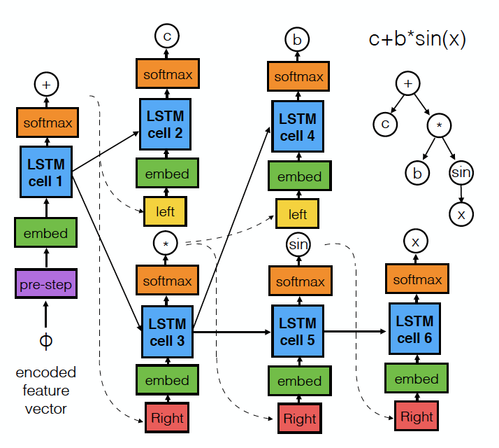
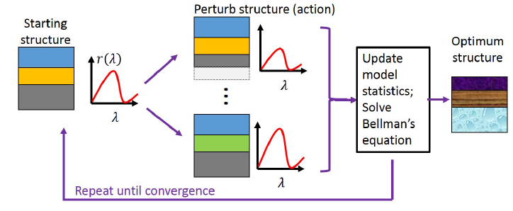

PhD Student, Stanford University
The goal of symbolic regression is to generate a function that describes a given set of data-points. This function can, generally, include undetermined constants that may be fit later. Typical approaches to symbolic regression involve global optimization techniques based on genetic algorithms [1,2,3], that search a subset of the entire space of possible equations to find the best fit. This approach is cumbersome and does not utilize any of the features or structure inherent in the original data.
In this work, we approach symbolic as a modified machine translation problem, where our goal is to translate the original dataset into an equation using a mixture of machine learning techniques. We first train a neural network to extract features from the dataset by performing a fit and stripping out the learned parameters from the network. We then train a recurrent neural network model (using a tree of LSTMs) to decode this feature vector into an equation tree. Further processing of this equation can be performed to fit constants and evaluate accuracy vs. simplicity.
We achieved modest results in predicting equations, although there is much room for experimentation and improvement. This work presents a fresh approach to the problem of symbolic regression and may allow for potential increases in predictive power, reliability, and speed compared to previous solutions.
This was the final project for CS221 (AI)
Paper CodeWe trained a number of sequential models to predict the trajectory of pedestrians as they move through a scene and interact with one another. Our model could be used to predict movements of crowds of people and vehicles given an overhead image of a scene. This may have potential applications in helping to make public spaces less susceptible to crowding or accidents, improving control of autonomous vehicles, and video surveillance. We are leveraging a part of the Stanford Drone dataset, which contains a large number of overhead images of crowded spaces on Stanford campus:(http://cvgl.stanford.edu/projects/uav_data/).
We trained an LSTM model to predict the positions and velocities of each pedestrian at a later time in the scene. This model was fed the previous positions and velocities of the pedestrian, along with
Our model showed slight performance enhancement over a linear trajectory model. We ran into issues because the complexity of our model was so high that we could not train on a reasonable amount of time.
This was the final project for CS230 (Deep Learning)
Code & NotebookOur project focused on training a reinforcement learning algorithm to optimize optical structures. We wish to input a desired device performance metric and return a procedure for constructing this device. In our case, we took a 1D stack of dielectric (glass) slabs as our structure and tried to reproduce a desired reflection spectrum. Our optimization procedure was modeled as a Markov Decision Process (MDP) where we tried to learn the transition probabilities and rewards associated with each device state and optimization step.
Our algorithm was able to perform well for few layers (< 3) but was not able to learn for many layered stacks, limiting its usefulness. We believe this is because we were not able to effectively explore the exponentially large exploration space.
This was the final project for CS229 (Machine Learning)
PaperOut of several numerical techniques for solving electromagnetic problems, the finite-difference time-domain (FDTD) and finite-difference frequency-domain (FDFD) methods are among the most widely used. FDTD is used to compute the time-dependence of the electromagnetic fields in a system, such as under illumination by an optical pulse. FDFD is used to examine the steady state behavior of an optical system (at a single frequency). FDTD requires performing updates on a matrix based on the time-dependent Maxwell’s equations, whereas FDFD requires solving a large, sparse, linear system.
I have written solvers for these methods in a variety of languages, including: